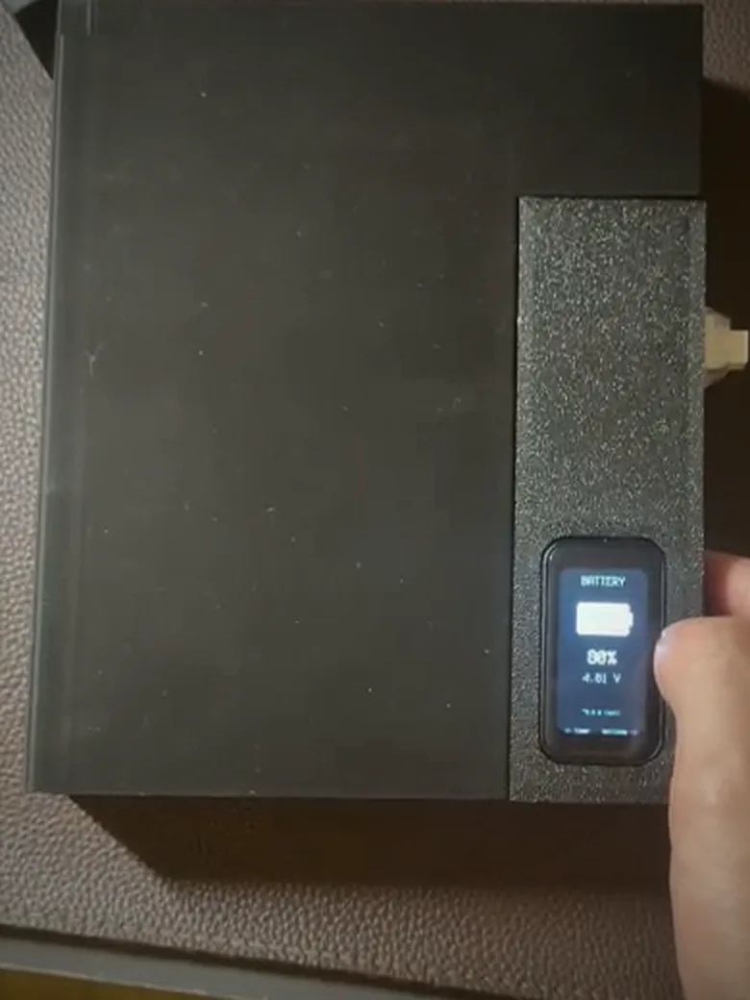
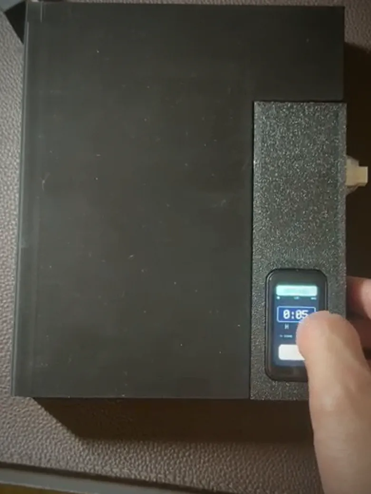
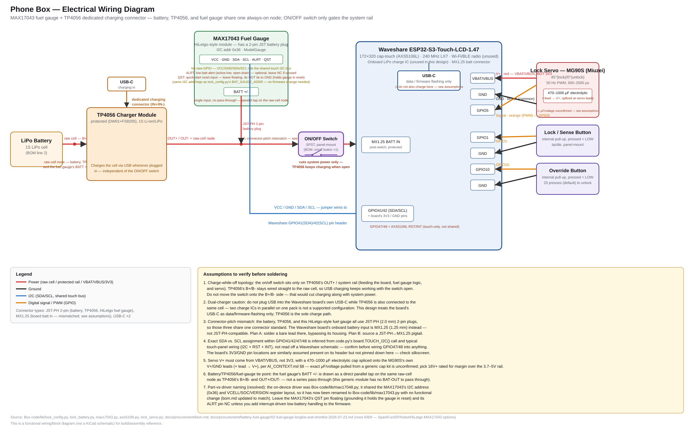

A lockbox that physically holds a phone shut for a set focus session. You close the lid,
set a time on its touchscreen, and a servo latch keeps it closed until the timer runs out.
It works on its own with no account and no connection, and an optional iOS companion app
pairs over Bluetooth Low Energy for live status and focus stats.
Status
Working prototype. A personal project: never sold, not for sale.
Evan Mah: design, fabrication, testing · Claude Code: most of the code (details)
Source
Private repository, 240+ commits. Walkthroughs on request.

Fig. 1 — Battery view, read from the MAX17043: 88%, 4.01 V.

Fig. 2 — Setting a session on the panel itself. No phone involved.
Both are frames from a video of the actual box, so they are softer than a proper photo.
Motivation
Software blockers can be turned off with one settings toggle, and the phone stays in your
hand the whole time. Commercial lockboxes solve that but are usually transparent, use a
mechanical dial, and offer either no way out or a weak one. I wanted a box that enforces the
session physically while still giving a deliberate way out in an emergency.
Design goals
Physical enforcement. The latch, not software on the phone, keeps the session.
A controlled exit. A tunable press-count override instead of a bypass or no exit at all.
Self-contained. All core functions run on the box with no app, account, or network.
Opaque and rechargeable. No seeing notifications through the case, and USB-C charging.
2Operation
Lock cycle
Close the lid. The lid presses a sensor button and the servo latches. No countdown runs yet.
Set the time. Swipe on the touchscreen to set hours, minutes and seconds, up to 9 h 55 min.
Tap LOCK. The countdown starts. While it runs, the clock is the only screen available.
Session ends. When the timer expires the latch releases and the session is logged.
Firmware states
The controller in lock_controller_states.py is a small state machine. The app
receives the current state verbatim over BLE.
State
Latch
Meaning
idle
Open
No session. Lid open or not yet detected.
closed
Latched
Lid sensor tripped and servo latched; waiting for LOCK.
picking
Either
On-box tag picker shown before a session starts.
confirming
Either
Confirm or change a session topic the app sent ahead of time.
running
Latched
Countdown active. Only the override or the timer ends it.
done
Releasing
Session over by timer, override, or app unlock. Completed runs are logged.
Emergency override
Override screen, redrawn from the firmware’s UI geometry
Pressing the override button a set number of times releases the latch early. The count
is 25 by default and can be set from 5 to 500 in steps of 5. Every release is written to
on-device memory, so using it is never silent. If more than a second passes between
presses (adjustable from 0.3 to 10 s), the count resets to zero, so the presses
have to be one deliberate sequence rather than a tally built up over time.
The iOS app can also unlock the box automatically when a phone call comes in. This is off
by default. Otherwise, the press-count override is the only way to end a session early.
Try it: a 25-press override in the browser
0 / 25
3Hardware
Components
Part
Role
Notes
ESP32-S3 board, 1.47″ touchscreen
Controller and UI
Runs CircuitPython; AXS5106L touch controller on I2C
Servo
Latch actuator
Signal on GPIO5; powered from the battery rail, not 3.3 V
Lid sensor button
Lid detection
GPIO1; closing the lid presses it and the servo latches
MAX17043 breakout
Fuel gauge
Hand-modified; shares the I2C bus at 0x36
LiPo cell, USB-C
Power
Rechargeable; brighter backlight on USB, dimmer on battery
Override button
Emergency exit
GPIO10; press count set in firmware settings
3D-printed enclosure
Housing
Opaque, FDM, designed in SolidWorks

Fig. 3 — Wiring. The servo runs on its own supply rather than the 3.3 V rail, and the
MAX17043 sits on I2C. Open full size
if the pin labels are too small to read.
Enclosure
The enclosure is modelled in SolidWorks and drawn for FDM printing, through two
full revisions. Each interface that could fail got its own small test print (a coupon) first:
the hinge, charger port, screen bezel, latch tab, power switch, and on/off button housing. Each
was checked against the real component before the full V2 assembly went to a multi-hour print.
Fit-test logV1 → V2
Main case + lid, rev 1
17–22 Aug
Hinge coupon
18 Aug
Charger-port coupon
18 Aug
Latch-tab coupon
18 Aug
Power-switch coupon
18 Aug
On/off button housing
18 Aug
Screen-bezel coupon
22 Aug
Full V2 assembly
24 Aug
Dates are from the CAD files: six coupons in five days, then the assembly.
Power & fuel gauge
The ESP32-S3 board has no fuel gauge, so a raw ADC voltage was the only battery signal. I added
a MAX17043 breakout and modified it by hand: cutting the traces that tied its 3 V rail to
the battery rail, then soldering and crimping it in. It shares the touchscreen’s I2C bus at
address 0x36, so it uses no extra GPIO and reports a real state of charge.
4Firmware
CircuitPython on the ESP32-S3, about 8,000 lines across roughly 30 modules in
firmware/lib: the controller and its state machine, the servo, power and battery
handling, BLE, settings, logging, and the touchscreen UI.
Touch driver
The AXS5106L touch controller had no CircuitPython driver, so the box runs a custom one over
I2C (axs5106l.py). It includes a debounce fix for frames the controller
intermittently drops mid-touch.
Persistence and brownout recovery
Settings, schedules, routines and focus streaks live in the microcontroller’s non-volatile
memory rather than a host-writable filesystem, so state survives a full power cut. A brownout
counter in the same memory drives automatic recovery if the servo’s inrush current
browns out the board mid-lock.
Settings
All settings are changed on the touchscreen and saved on the device.
Setting
Range
Default
Emergency override
5–500 presses, steps of 5
25
Override press window
0.3–10 s between presses
1.0 s
Focus length
Up to 9:55:00
—
Screen sleep (on battery)
Never, 10, 20, 30, 60 s
20 s
Brightness
10, 30, 50, 70, 100%
50%
Schedules, routines, streaks
On-device
—
5Companion app
An iOS app built with React Native (Expo), backed by Firebase. It is optional: the box does
everything in sections 2–4 without it. Two small native iOS modules,
call-observer and background-wake, cover what React Native cannot reach.
BLE interface
One custom GATT service. The UUIDs and payload shapes are defined twice, in the firmware’s
lock_config.py and the app’s protocol.ts, and kept in sync by hand.
Characteristic
Access
Purpose
status
Read, notify
State, battery, configured duration (box → app)
history
Read, notify
Logged sessions (box → app)
command
Write
Lock, unlock and other opcodes (app → box)
settings
Read, write
Device settings, round-trip
timeSync
Write
Current time as epoch seconds
alert
Write
Incoming-call label for auto-unlock
labels
Write
Custom session-tag list
pendingTopic
Write
Topic suggested for the next session
Features
Live status. Lock state, countdown and battery from the box.
Focus stats. Session history, streaks, and time per topic.
Goals and calendar. Focus goals with reminders, and planned sessions.
Call unlock. Optional automatic release when a call comes in. Off by default.
Sync. Sessions sync through Firebase and are viewable on the web dashboard (sign-in required).
6Debugging log
Problems that only appeared on the physical device, and how they were resolved.
6.1
Intermittent servo failures
Locks failed intermittently, never in a way that could be reasoned about on screen. Running
lock cycles on the bench until the pattern appeared showed two separate faults: the CPU
clock scaling out from under the servo’s PWM timer, and a motor drawing close to an amp
from a rail that could not supply it. The firmware now re-asserts 50 Hz on every move,
and the servo runs from the battery rail with bulk capacitance instead of 3.3 V.
6.2
Dropped touch frames
The touch controller occasionally drops frames in the middle of a touch, which chopped taps and
swipes into separate touches. The firmware now requires a few consecutive empty reads before
treating a touch as released.
6.3
No real battery reading
With no fuel gauge on the board, the state of charge was a guess from ADC voltage. Fixed in
hardware with the modified MAX17043 described in Power & fuel gauge.
7Credits
A plain split of who did what.
Evan Mah
Industrial and mechanical design: two full enclosure revisions in SolidWorks, drawn for FDM printing
Every fit-test part, printed and checked against the real component before committing to an assembly
The MAX17043 breakout modification: traces cut, soldered, crimped by hand
Finding the faults on real hardware: the intermittent servo failures and the dropped touch frames
Specifying what the box should do, testing every build on the physical device, and debugging what came back wrong
Tooling calls: parametric-CAD MCP to screen battery candidates for enclosure fit, and cutting an agent-swarm framework whose subagents never reported results back
Claude Code
Most of the CircuitPython firmware, including the servo state machine and the custom AXS5106L touch driver
Most of the React Native (Expo) companion app and its Firebase backend, plus the two native iOS modules
Diagnosing the root cause of the servo brownout once I had found it, and the capacitor fix
The touch debounce fix
The wiring diagram, derived from the firmware’s own config and driver files
I can’t write React Native cold and I didn’t write the firmware. I decided what the box
should do, built the thing it runs inside, tested every revision on real hardware, and drove the
agent that wrote the code across 240-plus commits.
8Prior art
Existing products I looked at before building this one.
Comparison of Phone Box against kSafe, generic Amazon boxes, Brick, Opal, and GoAro
Feature
Phone Box
kSafe
Amazon boxes
Brick
Opal
GoAro
Locks the phone physically away
Yes
Yes
Partial
No
No
Yes
Touchscreen interface
Yes
Dial
Dial
App
App
App
Tunable emergency override
Yes
None
Holes
No
Toggle
App
Rechargeable & opaque
Yes
Clear
Varies
n/a
n/a
Yes
A commodity box is cheaper, and Brick fits in a pocket. Neither has a touchscreen or a tunable override, and building one myself was half the point.
9Author
Evan Mah
Mechanical engineering undergraduate, Northeastern University · Boston, MA
I build hardware and drive agents to write the software around it. I wanted a box like this,
nothing on the market did what I needed, so I designed the enclosure, modified the electronics,
and used Claude Code to take it from firmware through an iOS app. It sits on my desk and it works.
I’m looking for a mechanical engineering co-op for July–December 2027.